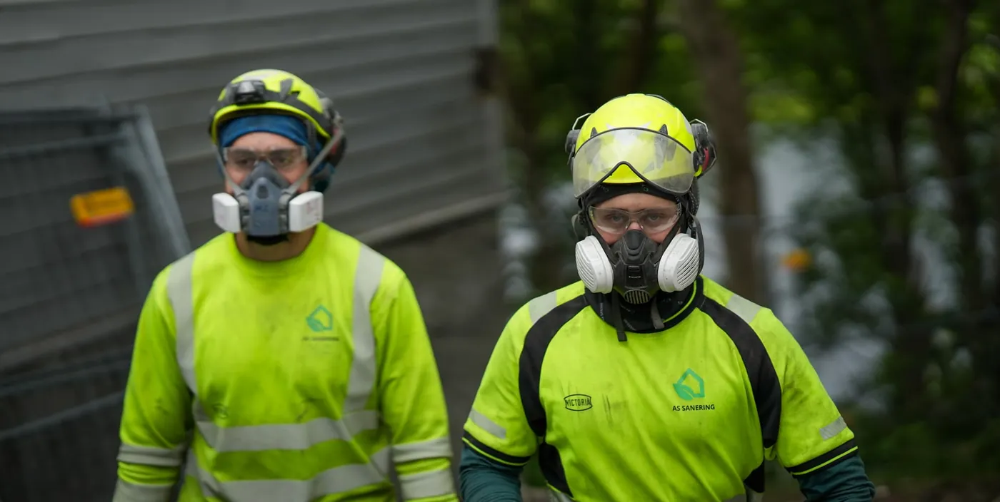

Forside / Referanser
Referanser
Prosjekter der riving, miljøkartlegging og asbest har vært en del av en større leveranse.

Bodø lufthavn
Rive- og saneringsarbeid ved lufthavnen, med arbeid i drift.
Regjeringskvartalet
Sanering i et av landets mest krevende byggeprosjekter.
Teknostallen
Riving og miljøkartlegging i Trondheim.
Referansene er hentet fra AS Sanering sin egen presentasjon. Bilder av lufthavn og regjeringskvartal er fra anleggene, ikke fra vårt arbeid.
Vil dere se referanser som ligner deres prosjekt?
Ta kontakt, så går vi gjennom det.